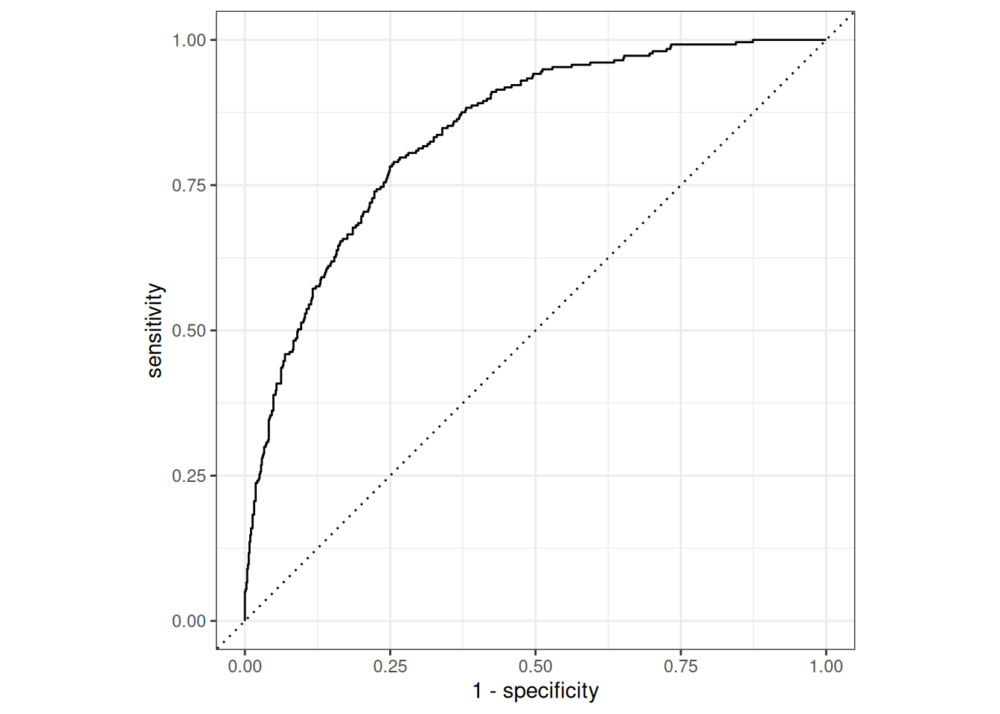

![]()
library(tidymodels)
library(tidyr)
library(tune)
library(modeldata)
library(furrr)
opts <- furrr_options(
seed = TRUE
)
# use `plan(sequential)` to effectively convert all
# subsequent `future_map*` calls to `map*`
# calls. this will result in sequential execution of
# embarassingly parallel model fitting procedures
# but may prevent R from getting angry at parallelism
plan(multicore)
set.seed(27) # the one true seedSummary
In this post I demonstrate how to implement the Super Learner using tidymodels infrastructure. The Super Learner is an ensembling strategy that relies on cross-validation to determine how to combine predictions from many models. tidymodels provides low-level predictive modeling infrastructure that makes the implementation rather slick. The goal of this post is to show how you can use this infrastructure to build new methods with consistent, tidy behavior. You’ll get the most out of this post if you’ve used rsample, recipes and parsnip before and are comfortable working with list-columns.
How do I fit the super learner?
The Super Learner is an ensembling strategy with nice optimality properties. It’s also not too terrible to implement:
- Fit a library of predictive models \(f_1, ..., f_n\) on the full data set
- Get heldout predictions from \(f_1, ..., f_n\) using k-fold cross-validation
- Train a metalearner on the heldout predictions
Then when you want to predict on new data, you first run the data through \(f_1, ..., f_n\), then take these predictions and send them through the metalearner.
I’ll walk through this step by step in R code, and then we’ll wrap it up into a slightly more reusable function.
Implementation
You’ll want to load the requisite packages with:
We’ll build a super learner on the iris dataset, which is build into R. iris looks like:
data <- as_tibble(iris)
data# A tibble: 150 × 5
Sepal.Length Sepal.Width Petal.Length Petal.Width Species
<dbl> <dbl> <dbl> <dbl> <fct>
1 5.1 3.5 1.4 0.2 setosa
2 4.9 3 1.4 0.2 setosa
3 4.7 3.2 1.3 0.2 setosa
4 4.6 3.1 1.5 0.2 setosa
5 5 3.6 1.4 0.2 setosa
6 5.4 3.9 1.7 0.4 setosa
7 4.6 3.4 1.4 0.3 setosa
8 5 3.4 1.5 0.2 setosa
9 4.4 2.9 1.4 0.2 setosa
10 4.9 3.1 1.5 0.1 setosa
# … with 140 more rowsWe want to predict Species based on Sepal.Length, Sepal.Width, Petal.Length and Petal.Width. While this data isn’t terribly exciting, multiclass classification is the most general case to deal with. Our code should just work for binary classification, and will require only minor modifications for regression problems.
Step 1: Fitting the library of predictive models
First we need to fit a library of predictive models on the full data set. We’ll use parsnip to specify the models, and dials to specify hyperparameter grids. Both parsnip and dials get loaded when you call library(tidymodels).
For now we record the model we want to use. I’m going to fit C5.0 classification trees, where each tree has different hyperparameters:
model <- decision_tree(
mode = "classification",
min_n = tune(),
tree_depth = tune()
) %>%
set_engine("C5.0")
modelDecision Tree Model Specification (classification)
Main Arguments:
tree_depth = tune()
min_n = tune()
Computational engine: C5.0 If you look at ?decision_tree, you’ll see that we need to specify two hyperparameters, min_n and tree_depth, for the C5.0 engine. To do this we’ll create a random hyperparameter grid using dials.
hp_grid <- grid_random(
min_n() %>% range_set(c(2, 20)),
tree_depth(),
size = 10
)
hp_grid# A tibble: 10 × 2
min_n tree_depth
<int> <int>
1 6 15
2 19 11
3 10 14
4 9 8
5 20 1
6 17 12
7 2 1
8 2 14
9 2 15
10 4 8Now we create a tibble with a list-column of completed model specifications (C5.0 trees where we’ve specified the hyperparameter values). It’ll be useful to keep track of precisely which tree we’re working with, so we also add a model_id column:
spec_df <- merge(model, hp_grid) %>% # tune::merge(), formerly dials::merge()
dplyr::rename(spec = x) %>%
mutate(model_id = row_number())
spec_df# A tibble: 10 × 2
spec model_id
<list> <int>
1 <spec[?]> 1
2 <spec[?]> 2
3 <spec[?]> 3
4 <spec[?]> 4
5 <spec[?]> 5
6 <spec[?]> 6
7 <spec[?]> 7
8 <spec[?]> 8
9 <spec[?]> 9
10 <spec[?]> 10Now that we’ve specified our library of models, we’ll describe the data design we’d like to use with a recipe. For giggles, we’ll use the first two principle components:
recipe <- data %>%
recipe(Species ~ .) %>%
step_pca(all_predictors(), num_comp = 2)
recipeRecipe
Inputs:
role #variables
outcome 1
predictor 4
Operations:
PCA extraction with all_predictors()Now we can wrap up the first step and fit each of these trees on the full dataset. Here I use furrr::future_map() to do this in parallel, taking advantage of the embarrassingly parallel nature of model fitting. We pass opts to .options to get into the habit of using parallelism-safe random number generation, which will be important in just a moment.
prepped <- prep(recipe, training = data)
x <- juice(prepped, all_predictors())
y <- juice(prepped, all_outcomes())
full_fits <- spec_df %>%
mutate(fit = future_map(spec, fit_xy, x, y, .options = opts))
full_fits# A tibble: 10 × 3
spec model_id fit
<list> <int> <list>
1 <spec[?]> 1 <fit[+]>
2 <spec[?]> 2 <fit[+]>
3 <spec[?]> 3 <fit[+]>
4 <spec[?]> 4 <fit[+]>
5 <spec[?]> 5 <fit[+]>
6 <spec[?]> 6 <fit[+]>
7 <spec[?]> 7 <fit[+]>
8 <spec[?]> 8 <fit[+]>
9 <spec[?]> 9 <fit[+]>
10 <spec[?]> 10 <fit[+]>Step 2: Getting holdout predictions
We’ll use rsample to generate the resampled datasets for 10-fold cross-validation, like so:
folds <- vfold_cv(data, v = 10)We will want to fit a model on each fold, which is a mapping operation like before. We define a helper that will fit one of our trees (defined by a parsnip model specification) on a given fold, and pass the data in the form of a trained recipe object, which we call prepped:
fit_on_fold <- function(spec, prepped) {
x <- juice(prepped, all_predictors())
y <- juice(prepped, all_outcomes())
fit_xy(spec, x, y)
}Now we create a tibble containing all combinations of the cross-validation resamples and all the tree specifications:
# note that tidyr::crossing() used to work for this operation but no
# longer does
crossed <- expand_grid(folds, spec_df)
crossed# A tibble: 100 × 4
splits id spec model_id
<list> <chr> <list> <int>
1 <split [135/15]> Fold01 <spec[?]> 1
2 <split [135/15]> Fold01 <spec[?]> 2
3 <split [135/15]> Fold01 <spec[?]> 3
4 <split [135/15]> Fold01 <spec[?]> 4
5 <split [135/15]> Fold01 <spec[?]> 5
6 <split [135/15]> Fold01 <spec[?]> 6
7 <split [135/15]> Fold01 <spec[?]> 7
8 <split [135/15]> Fold01 <spec[?]> 8
9 <split [135/15]> Fold01 <spec[?]> 9
10 <split [135/15]> Fold01 <spec[?]> 10
# … with 90 more rowsThe fitting procedure is then the longest part of the whole process, and looks like:
cv_fits <- crossed %>%
mutate(
prepped = future_map(splits, prepper, recipe, .options = opts),
fit = future_map2(spec, prepped, fit_on_fold, .options = opts)
)Now that we have our fits, we need to get holdout predictions. Recall that we trained each fit on the analysis() set, but we want to get holdout predictions using the assessment() set. There are a lot of moving pieces here, so we define a prediction helper function that includes the original row number of each prediction:
predict_helper <- function(fit, new_data, recipe) {
# new_data can either be an rsample::rsplit object
# or a data frame of genuinely new data
if (inherits(new_data, "rsplit")) {
obs <- as.integer(new_data, data = "assessment")
# never forget to bake when predicting with recipes!
new_data <- bake(recipe, assessment(new_data))
} else {
obs <- 1:nrow(new_data)
new_data <- bake(recipe, new_data)
}
# if you want to generalize this code to a regression
# super learner, you'd need to set `type = "response"` here
predict(fit, new_data, type = "prob") %>%
tibble::add_column(obs = obs, .before = TRUE)
}Now we use our helper to get predictions for each fold, for each hyperparameter combination. First we get the complete set of predictions for each fold and save them in a list-column called raw_preds. Then, since the predictions are perfectly correlated (.pred_setosa + .pred_versicolor + .pred_virginica = 1), we drop the last column of predictions to avoid issues with metalearners sensitive to colinearity. Finally, the preds column will be a list-column, so we unnest() to take a look.
drop_last_column <- function(df) df[, -ncol(df)]
holdout_preds <- cv_fits %>%
mutate(
raw_preds = future_pmap(list(fit, splits, prepped), predict_helper, .options = opts),
preds = future_map(raw_preds, drop_last_column, .options = opts)
)
holdout_preds %>%
unnest(preds)# A tibble: 1,500 × 10
splits id spec model_id prepped fit raw_preds obs
<list> <chr> <list> <int> <list> <list> <list> <int>
1 <split [135/15]> Fold01 <spec[?]> 1 <recipe> <fit[+]> <tibble> 15
2 <split [135/15]> Fold01 <spec[?]> 1 <recipe> <fit[+]> <tibble> 23
3 <split [135/15]> Fold01 <spec[?]> 1 <recipe> <fit[+]> <tibble> 29
4 <split [135/15]> Fold01 <spec[?]> 1 <recipe> <fit[+]> <tibble> 36
5 <split [135/15]> Fold01 <spec[?]> 1 <recipe> <fit[+]> <tibble> 37
6 <split [135/15]> Fold01 <spec[?]> 1 <recipe> <fit[+]> <tibble> 48
7 <split [135/15]> Fold01 <spec[?]> 1 <recipe> <fit[+]> <tibble> 56
8 <split [135/15]> Fold01 <spec[?]> 1 <recipe> <fit[+]> <tibble> 59
9 <split [135/15]> Fold01 <spec[?]> 1 <recipe> <fit[+]> <tibble> 70
10 <split [135/15]> Fold01 <spec[?]> 1 <recipe> <fit[+]> <tibble> 89
# … with 1,490 more rows, and 2 more variables: .pred_setosa <dbl>,
# .pred_versicolor <dbl>Now we have to shape this into something we can train a metalearner on, which means we need:
- 1 row per original observation
- 1 column per regression tree and outcome category
Getting data into this kind of tidy format is exactly what tidyr excels at. Here we need to go from a long format to a wide format, which will often be the case when working with models in list columns1.
The new pivot_wider() function exactly solves this our reshaping problem once we realize that:
- The row number of each observation in the original dataset is in the
obscolumn - The
.pred_*columns contain the values of interest - The
model_idcolumn identifies what the names of the new columns should be.
We’re going to need to use this operation over and over again, so we’ll put it into a function.
spread_nested_predictions <- function(data) {
data %>%
unnest(preds) %>%
pivot_wider(
id_cols = obs,
names_from = model_id,
values_from = contains(".pred")
)
}
holdout_preds <- spread_nested_predictions(holdout_preds)
holdout_preds# A tibble: 150 × 21
obs .pred_setosa_1 .pred_setosa_2 .pred_setosa_3 .pred_setosa_4
<int> <dbl> <dbl> <dbl> <dbl>
1 15 0.985 0.985 0.985 0.985
2 23 0.985 0.985 0.985 0.985
3 29 0.985 0.985 0.985 0.985
4 36 0.985 0.985 0.985 0.985
5 37 0.985 0.985 0.985 0.985
6 48 0.985 0.985 0.985 0.985
7 56 0.00758 0.00758 0.00758 0.00758
8 59 0.00758 0.00758 0.00758 0.00758
9 70 0.00758 0.00758 0.00758 0.00758
10 89 0.00758 0.00758 0.00758 0.00758
# … with 140 more rows, and 16 more variables: .pred_setosa_5 <dbl>,
# .pred_setosa_6 <dbl>, .pred_setosa_7 <dbl>, .pred_setosa_8 <dbl>,
# .pred_setosa_9 <dbl>, .pred_setosa_10 <dbl>, .pred_versicolor_1 <dbl>,
# .pred_versicolor_2 <dbl>, .pred_versicolor_3 <dbl>,
# .pred_versicolor_4 <dbl>, .pred_versicolor_5 <dbl>,
# .pred_versicolor_6 <dbl>, .pred_versicolor_7 <dbl>,
# .pred_versicolor_8 <dbl>, .pred_versicolor_9 <dbl>, …We’re almost ready to fit a the metalearning model on top of these predictions, but first we need to join these predictions back to the original dataset using obs to recover the labels!
meta_train <- data %>%
mutate(obs = row_number()) %>%
right_join(holdout_preds, by = "obs") %>%
select(Species, contains(".pred"))
meta_train# A tibble: 150 × 21
Species .pred_setosa_1 .pred_setosa_2 .pred_setosa_3 .pred_setosa_4
<fct> <dbl> <dbl> <dbl> <dbl>
1 setosa 0.985 0.985 0.985 0.985
2 setosa 0.986 0.986 0.986 0.986
3 setosa 0.986 0.986 0.986 0.986
4 setosa 0.986 0.986 0.986 0.986
5 setosa 0.985 0.985 0.985 0.985
6 setosa 0.985 0.985 0.985 0.985
7 setosa 0.986 0.986 0.986 0.986
8 setosa 0.985 0.985 0.985 0.985
9 setosa 0.986 0.986 0.986 0.986
10 setosa 0.986 0.986 0.986 0.986
# … with 140 more rows, and 16 more variables: .pred_setosa_5 <dbl>,
# .pred_setosa_6 <dbl>, .pred_setosa_7 <dbl>, .pred_setosa_8 <dbl>,
# .pred_setosa_9 <dbl>, .pred_setosa_10 <dbl>, .pred_versicolor_1 <dbl>,
# .pred_versicolor_2 <dbl>, .pred_versicolor_3 <dbl>,
# .pred_versicolor_4 <dbl>, .pred_versicolor_5 <dbl>,
# .pred_versicolor_6 <dbl>, .pred_versicolor_7 <dbl>,
# .pred_versicolor_8 <dbl>, .pred_versicolor_9 <dbl>, …Step 3: Fit the metalearner
I’m going to use a multinomial regression as the metalearner. You can use any metalearner that does multiclass classification here, but I’m going with something simple because I don’t want to obscure the logic with additional hyperparameter search here.
# these settings correspond to multinomial regression
# with a small ridge penalty. the ridge penalty makes
# sure this doesn't explode when the number of columns
# of heldout predictions is greater than the number of
# observations in the original data set
#
# in practice, you'll probably want to avoid base learner
# libraries that large due to difficulties estimating
# the relative performance of the base learners
metalearner <- multinom_reg(penalty = 0.01, mixture = 0) %>%
set_engine("glmnet") %>%
fit(Species ~ ., meta_train)That’s it! We’ve fit the super learner! Just like the training process, prediction itself proceeds involves two separate stages:
new_data <- head(iris)
# run the new data through the library of base learners first
base_preds <- full_fits %>%
mutate(
raw_preds = future_map(fit, predict_helper, new_data, prepped, .options = opts),
preds = future_map(raw_preds, drop_last_column, .options = opts)
) %>%
spread_nested_predictions()
# then through the metalearner
predict(metalearner, base_preds, type = "prob")# A tibble: 6 × 3
.pred_setosa .pred_versicolor .pred_virginica
<dbl> <dbl> <dbl>
1 0.966 0.0209 0.0127
2 0.966 0.0209 0.0127
3 0.966 0.0209 0.0127
4 0.966 0.0209 0.0127
5 0.966 0.0209 0.0127
6 0.966 0.0209 0.0127Putting it all together
Now we can take all the code we’ve written up and encapsulate it into a single function (still relying on the helper functions we defined above).
Note that this is a reference implementation and in practice I recommend following the tidymodels recommendations when implementing new methods. Luckily, we do end up inherit a fair amount of nice consistency from parsnip itself.
#' Fit the super learner!
#'
#' @param library A data frame with a column `spec` containing
#' complete `parsnip` model specifications for the base learners
#' and a column `model_id`.
#' @param recipe An untrained `recipe` specifying data design
#' @param meta_spec A singe `parsnip` model specification
#' for the metalearner.
#' @param data The dataset to fit the super learner on.
#'
#' @return A list with class `"super_learner"` and three elements:
#'
#' - `full_fits`: A tibble with list-column `fit` of fit
#' base learners as parsnip `model_fit` objects
#'
#' - `metalearner`: The metalearner as a single parsnip
#' `model_fit` object
#'
#' - `recipe`: A trained version of the original recipe
#'
super_learner <- function(library, recipe, meta_spec, data) {
folds <- vfold_cv(data, v = 5)
cv_fits <- expand_grid(folds, library) %>%
mutate(
prepped = future_map(splits, prepper, recipe, .options = opts),
fit = future_pmap(list(spec, prepped), fit_on_fold, .options = opts)
)
prepped <- prep(recipe, training = data)
x <- juice(prepped, all_predictors())
y <- juice(prepped, all_outcomes())
full_fits <- library %>%
mutate(fit = future_map(spec, fit_xy, x, y, .options = opts))
holdout_preds <- cv_fits %>%
mutate(
raw_preds = future_pmap(list(fit, splits, prepped), predict_helper, .options = opts),
preds = future_map(raw_preds, drop_last_column, .options = opts)
) %>%
spread_nested_predictions() %>%
select(-obs)
metalearner <- fit_xy(meta_spec, holdout_preds, y)
sl <- list(full_fits = full_fits, metalearner = metalearner, recipe = prepped)
class(sl) <- "super_learner"
sl
}We also write an S3 predict method:
predict.super_learner <- function(x, new_data, type = c("class", "prob")) {
type <- rlang::arg_match(type)
new_preds <- x$full_fits %>%
mutate(
raw_preds = future_map(fit, predict_helper, new_data, x$recipe, .options = opts),
preds = future_map(raw_preds, drop_last_column, .options = opts)
) %>%
spread_nested_predictions() %>%
select(-obs)
predict(x$metalearner, new_preds, type = type)
}Our helpers do assume that we’re working on a classification problem, but other than this we pretty much only rely on the parsnip API. This means we can mix and match parts to our hearts desire and things should still work2. For example, we can build off the parsnip classification vignette, which starts like so:
# we have to do this because `modeldata` doesn't use lazy data loading
data("credit_data")
data_split <- credit_data %>%
na.omit() %>%
initial_split(strata = "Status", prop = 0.75)
credit_train <- training(data_split)
credit_test <- testing(data_split)
credit_recipe <- recipe(Status ~ ., data = credit_train) %>%
step_center(all_numeric()) %>%
step_scale(all_numeric())But now let’s fit a Super Learner based on a stack of MARS fits instead of a neural net. You could also mix in other arbitrary models3. First we take a moment to set up the specification:
# needed due to a namespace bug at the moment,
# but not in general
library(earth)
credit_model <- mars(mode = "classification", prune_method = "backward") %>%
set_engine("earth")
credit_hp_grid <- grid_random(
num_terms() %>% range_set(c(1, 30)),
prod_degree(),
size = 5
)
credit_library <- merge(credit_model, credit_hp_grid) %>%
dplyr::rename(spec = x) %>%
mutate(model_id = row_number())
credit_meta <- multinom_reg(penalty = 0, mixture = 1) %>%
set_engine("glmnet")Now we do the actual fitting and take a quick coffee break:
credit_sl <- super_learner(
credit_library,
credit_recipe,
credit_meta,
credit_train
)Since we inherit the tidymodels predict() conventions, getting a holdout ROC curve is as easy as:
pred <- predict(credit_sl, credit_test, type = "prob")
pred %>%
bind_cols(credit_test) %>%
roc_curve(Status, .pred_bad) %>%
autoplot()
Wrap up
That’s it! We’ve fit a clever ensembling technique in a few lines of code! Hopefully the concepts are clear and you can start to play with ensembling on your own. I should note that this post uses a ton of different tidymodels abstractions, which can be intimidating. The goal here is to demonstrate how to integrate all of various components together into a big picture. If you aren’t familiar with the individual tidymodels packages, my impression is that the best way to gain this familiarity is by gradually working through the various tidymodels vignettes.
In practice, it is a bit of relief to be done with this post. I’ve been playing around with implementing the Super Learner since summer 2017, but each time I gave it a shot things got messy much faster than I anticipated and I kicked the task down the line. Only recently have the tools to make the Super Learner implementation so pleasant come to life4. Thanks Max and Davis!
If you want to use the Super Learner in practice, I believe the sl3 package is the most actively developed. There’s also Eric Polley’s classic SuperLearner package, which may be more full featured than sl3 at the moment. Also be sure to check out h2o::automl(), which makes stacking about as painless as can be if you just need results!
References
If you’re new to the Super Learner, I recommend starting with LeDell (2015a). Section 2.2 of LeDell (2015b) is similar but goes into more detail. van der Laan, Polley, and Hubbard (2007) is the original Super Learner paper and contains the proof the oracle property, an optimality result. Polley and van der Laan (2010) discusses the Super Learner from a more applied point of view, with some simulations demonstrating performance. van der Laan and Rose (2018) is a comprehensive reference on both the Super Learner and TMLE. The Super Learner papers and book are targeted at a research audience with a high level of mathematical background, and are not easy reading. Wolpert (1992) is another often cited paper on stacking that is more approachable.
References
LeDell, Erin. 2015a. “Intro to Practical Ensemble Learning.”
———. 2015b. “Scalable Ensemble Learning and Computationally Efficient Variance Estimation.” PhD thesis.
Polley, Eric C, and Mark J. van der Laan. 2010. “Super Learner In Prediction,” 21.
van der Laan, Mark J., Eric C Polley, and Alan E. Hubbard. 2007. “Super Learner.”
van der Laan, Mark J., and Sherri Rose. 2018. Targeted Learning in Data Science. Springer Series in Statistics. Cham: Springer International Publishing. https://doi.org/10.1007/978-3-319-65304-4.
Wolpert, David H. 1992. “Stacked Generalization.”
Footnotes
Note that multiclass prediction is hardest to deal with because we have multiple prediction columns. For binary classification and regression, we’d only have a single column containing predictions, making the tidying easier.↩︎
Fair warning: I have found a lot of bugs in the wrappers around modeling functions.↩︎
For some reason, I got poor test performance when I tried this, and I’m not sure why. I’ve asked Erin Ledell on Twitter and will update if I get a response, hopefully including a more full example here.↩︎
The newness of these tools also means that some of them aren’t entirely stable, however, and I found some bugs while writing this post.↩︎